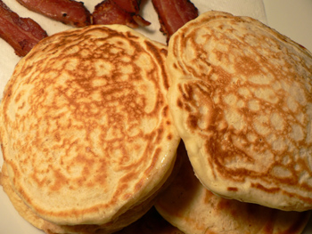
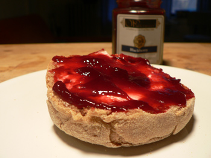

Pancakes and English muffins
I have a terrible fear of pancakes. I love to eat them, but I didn’t had a clue about making them from scratch, and the few efforts I made were disasters. Last year I had a brunch party and served all my guests hot cakes from the skillet. It wasn’t until they were nearly done that I took a bite and realized what I’d just put them through: a floury, lumpy horror show. I could have died, and I decided I’d stick to french toast from then on.

But Mark Bittman has a way of changing my mind about things, and his article on pancakes last month convinced me to try again. For New Year’s breakfast, I made his Everyday Pancakes with what I’d consider great success. They were thick but light, tender and crispy, and full of flavor. I might add a bit more salt next time, but these are delicious as they are.
Everyday Pancakes
- 2 cups all-purpose flour
- 2 teaspoons baking powder
- 1/4 teaspoon salt
- 1 tablespoon sugar, optional
- 2 eggs
- 1 1/2 to 2 cups milk
- 2 tablespoons melted and cooled butter (optional), plus unmelted butter for cooking, or use neutral oil.
Heat a griddle or large skillet over medium-low heat. In a bowl, mix together dry ingredients. Beat eggs into 1 1/2 cups milk, then stir in 2 tablespoons melted cooled butter, if using it. Gently stir this mixture into dry ingredients, mixing only enough to moisten flour; don’t worry about a few lumps. If batter seems thick, add a little more milk.
Place a teaspoon or 2 of butter or oil on griddle or skillet. When butter foam subsides or oil shimmers, ladle batter onto griddle or skillet, making pancakes of any size you like. Adjust heat as necessary; usually, first batch will require higher heat than subsequent batches. Flip pancakes after bubbles rise to surface and bottoms brown, after 2 to 4 minutes.
Cook until second side is lightly browned. Serve, or hold on an ovenproof plate in a 200-degree oven for up to 15 minutes. Yield: 4 to 6 servings.
In other breakfast news, my Aunt Judi gave me and Nathan a gift package from Wolferman’s for Christmas containing four packs of English muffins and a jar of blackberry jam.

Toasted well and spread with a bit of cream cheese under the jam, this is a perfect breakfast. I had never heard of the company, but when I told Mom I got English muffins, she immediately asked, “Are they Wolferman’s? Wolferman’s are the best English muffins in the world!” And right she is. Having never had anything but Thomas’, these flavorful, tuna can–sized muffins are a revelation. I wish you could buy them in stores.
Comments
I made Mark Bittman’s pancakes this past weekend too, and loved them. They tasted exactly like the Joy of Cooking ones my mother always made us growing up — simple and quick. I added only orange zest and a splash of vanilla, in accommodation of my grown-up (ha!) tastes.
I once ended up in front of a hot skillet when a dozen friends came over for brunch, (least fun brunch EVER) though it was for french toast and I quickly figured out a way to bake it in a pan after that, living and learning so to speak.
WOLFERMANS
WOLFERMANS
WOLFERMANS
the BEST!
One year for Christmas your Mom got us Wolferman’s English Muffins for a year- you know Muffin of the Month. It was a great gift!
Cook’s Illustrated had a good recipe for blueberry pancakes a few years ago, which was similarly awesome — the trick, really, is to mix the batter as little as possible. Totally counterintuitive. All those years I’d spent beating volume into the batter thinking that’d make it fluffy, and instead I really should have been just barely moistening everything and letting the skillet do the work.
Sour milk is also better than fresh, I’ve found. Perfect excuse for keeping quarts of soured milk in your fridge a little longer than you might ordinarily.
We usually make our pancakes with buttermilk here, or sometimes vanilla yogurt, which eliminates the need to add sugar and gives them a nice hint of vanilla. I think the buttermilk makes them extra fluffy.
Did you serve them with applesauce on the side? I love home made applesauce with my pancakes.
Why, pray tell, can’t you buy them in stores? I am feeling cruelly taunted since my appetite has been whetted and I would like nothing more than to have one. Damn.
Thanks for your comments, everyone!
You should all know that Wolferman’s is having a big sale right now: you can get twelve 4-packs of muffins for $20 plus shipping! (Luisa: I’ll go in with you if you want!)
Add a comment